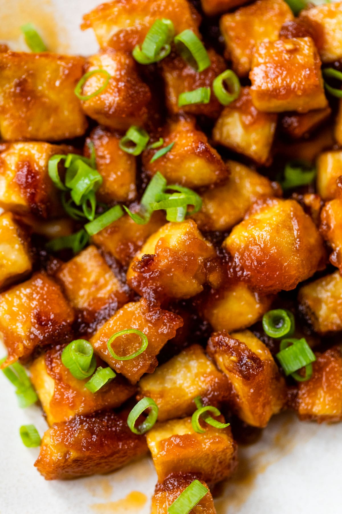

honey siracha tofu

description
this tofu is a great source of protein and amino acids with a spicy kick. enjoy with your favorite sides for a healthy, filling meal. replace the honey with maple syrup, or omit it entirely if you would like to make this dish vegan. additionally, although it is reccomended that the tofu is frozen before baking to create a firmer texture, you can skip this part. instead, marinade the tofu for at least 30 minutes and proceed with baking the tofu.
ingredients
- block of extra-firm tofu
- 1/2 cup of siracha sauce
- 1/4 cup of honey
- teaspoon of sesame oil
- tablespoon of rice vinegar
- tablespoon of soy sauce
- 1 large garlic clove (minced)
- sprinkle of cornstarch
- scallions and furikake (optional toppings)
- press the tofu by wrapping the block in a paper towel and placing a weight such as a cutting board on top.
- while the tofu is being pressed prepare the marinade. whisk the siracha, honey, oil, vinegar, soy sauce and garlic in a bowl.
- remove the tofu from the weight and paper towel and cut into cubes. place the cubes into a freezer bag and pour the marinade on top. close the bag and lightly shake so that all cubes are coated in the marinade.
- place the tofu in the freezer overnight, or until it freezes over completely. you can store the tofu in the freezer for up to 5 months.
- remove the tofu from the freezer at least 8 hours before you would like to prepare it. this gives the tofu ample time to defrost and soak up the marinade.
- preheat an oven to 350 degrees fahrenheit.
- coat tofu with a sprinkle of cornstarch.
- arrange tofu on a baking sheet or a baking pan with a bit of oil.
- bake the tofu for 30 minutes total. after 15 minutes, flip each cube so the tofu cooks evenly.
- let the tofu cool. sprinkle with toppings and enjoy!